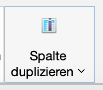
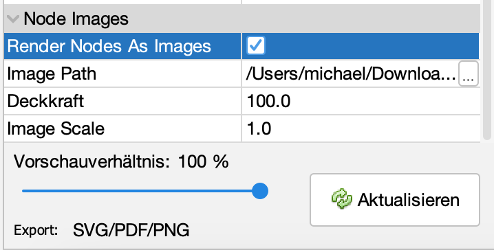

Image Exploration with Gephi
![]()
This page lists the remaining step for creating an image network based on labels from commercial computer vision APIs. The process is rather complex, the steps below omit some intermediary steps, e.g. for filtering and adjusting the text labels for nodes and edges.
Important
These steps are based on Omena et al. (2021)’s approach. The first steps are located in the exploration chapter.




References
Omena, Janna Joceli, Pilipets Elena, Beatrice Gobbo, and Chao Jason. 2021. “The Potentials of Google Vision API-based Networks to Study Natively Digital Images.” Diseña, no. 19 (September): 1–1. https://doi.org/10.7764/disena.19.Article.1.